Master the core fundamentals of brick production, deliver raw material processing solutions, and produce premium quality fired bricks
8 Major
Test Programs
31 Raw Material
Test Parameters
18 Key Data
Analysis Reports
What tests are performed on raw materials?
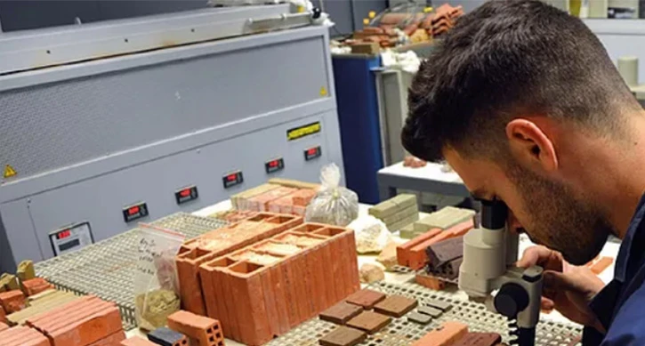
Type of raw materials
ClayShaleCoal GangueFly Ash
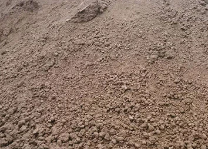
Clay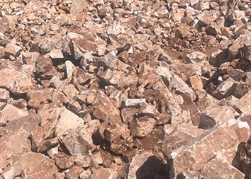
Shale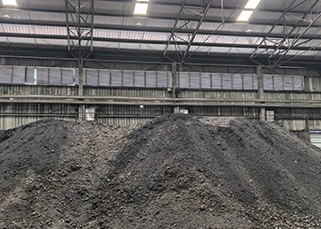
Coal Gangue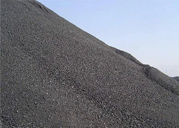
Fly AshExperimental report template
Master the core fundamentals of brick production,
deliver raw material processing solutions,
and produce premium quality fired bricks.
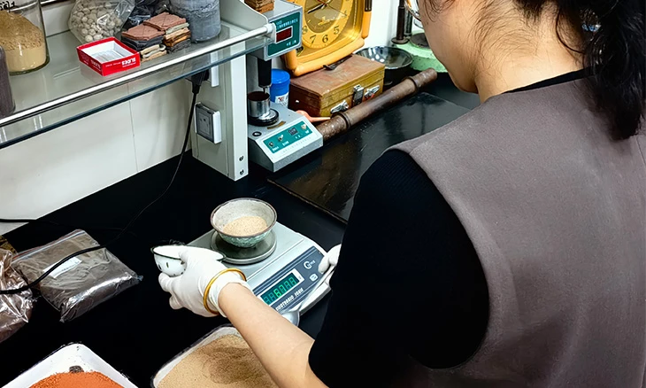
Download the template 验证原料可行性Verify Raw Material Feasibility
Verify raw material feasibility and avoid investment risks
支撑工艺选型Support Process Selection
Support equipment & process selection and control construction investment
核算成本收益Cost-Benefit Analysis
Calculate cost & benefit and scientifically assess returns
98.5%Quality control rate
Experimental Photos
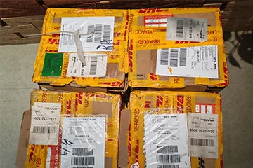
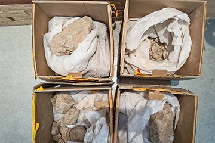
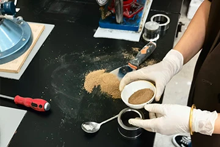
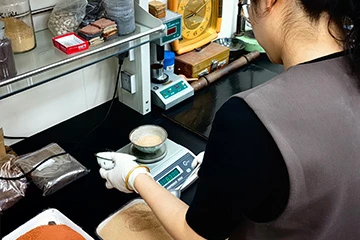
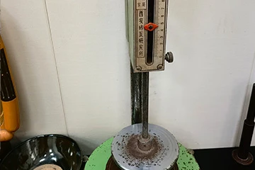
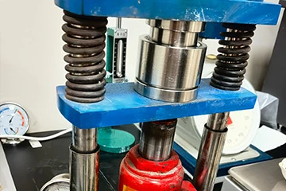
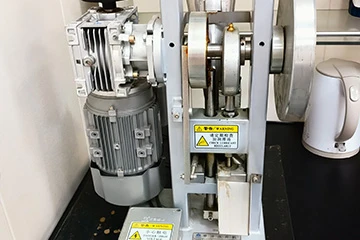
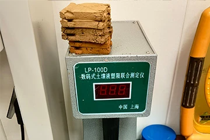
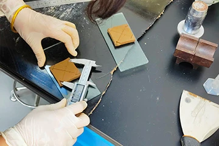
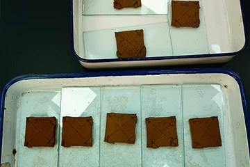
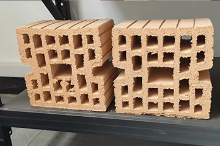
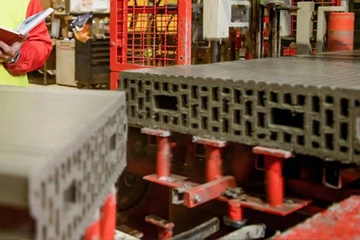